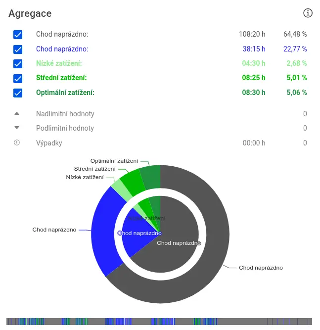

Monitoring v reálném čase
Stav všech zařízení na jednom místě. Barvy rozliší optimální chod, běh naprázdno, přetížení a hodnoty mimo nastavený rozsah.

INFORMAČNÍ SYSTÉM PRO KAMENOPRŮMYSLSběr, vizualizace a analýza provozních dat z drtičů, vah, pásových vah a podavačů. Bez ohledu na výrobce stroje nebo komunikační protokol. Stačí webový prohlížeč.

Stav všech zařízení na jednom místě. Barvy rozliší optimální chod, běh naprázdno, přetížení a hodnoty mimo nastavený rozsah.
Systém upozorní na výpadek komunikace nebo zastavení výroby. Hlášení dostane i servisní technik MRI Servis.
Interaktivní grafy s přiblížením. Více strojů a kanálů na jedné časové ose, trendy a úzká místa. Data z grafu stáhnete do Excelu.
Poměr optimálního provozu, chodu naprázdno a přetížení po dnech i směnách. Grafy a statistiky pro vedoucího provozu.
Pravidelné shrnutí výroby do e-mailu. Export surových i agregovaných dat do PDF, XLSX, ODS a CSV.
Vlastní hierarchie provozů, uživatelé s různými oprávněními a limity hodnot a alarmy pro každé zařízení.
Na první pohled vidíte, které stroje běží optimálně, které naprázdno a které jsou přetížené. Výpadek komunikace se zobrazí hned.
Každá hodnota má barvu podle nastavených úrovní: přetížení, optimální zatížení, chod naprázdno, stání. Přiblížíte libovolný úsek dne a data z grafu stáhnete do Excelu.

Kolik času stroj běžel optimálně, naprázdno a v přetížení. Po dnech, směnách i za celý měsíc.
Instalaci na místě dělají technici MRI Servis, kteří lomům dodávají i elektro a automatizaci. Když z provozu přestanou chodit data, vědí o tom a domluví kontrolu.
Výroba za den, týden a měsíc. Kde stroje stály a proč. Podklady pro porady bez přepisování.
Okamžitý stav linky. Výpadek nebo přetížení uvidíte dřív, než se projeví na skládce.
Srovnání provozů a vytížení strojů na jednom místě. Data k rozhodnutí o investicích.
Ano. MRI Pro sjednotí data bez ohledu na výrobce stroje a komunikační protokol.
U vás ne, aplikace běží v prohlížeči. Čidla a ústřednu v provozu nainstalují technici MRI Servis.
Jen uživatelé, které založíte. Každý vidí provozy podle svého oprávnění.
Ústředna drží data v paměti a odešle je, až se spojení obnoví. Výpadek se zároveň nahlásí.
[Cenový model doplní MRI Servis.]
Ukážeme vám aplikaci na datech ze skutečného provozu.
Marek Drgáč, jednatel
+420 603 146 529
drgac@mriservis.cz
Kancelář
+420 581 737 934
info@mriservis.cz